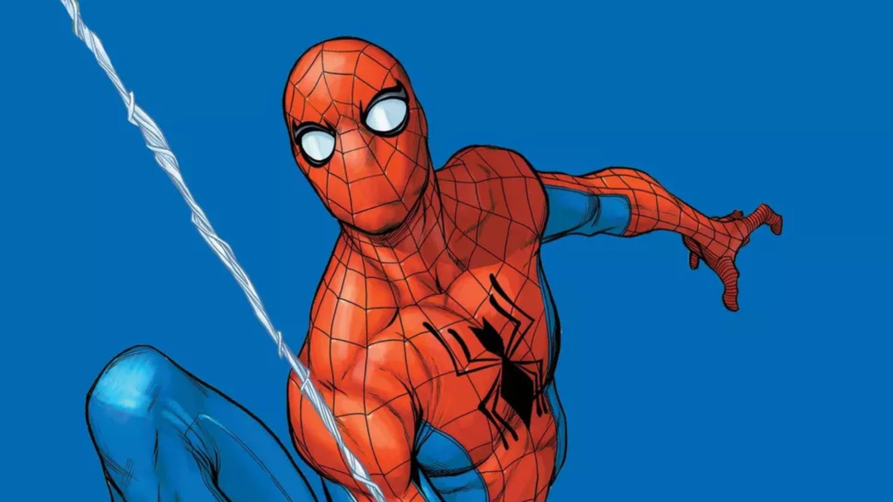
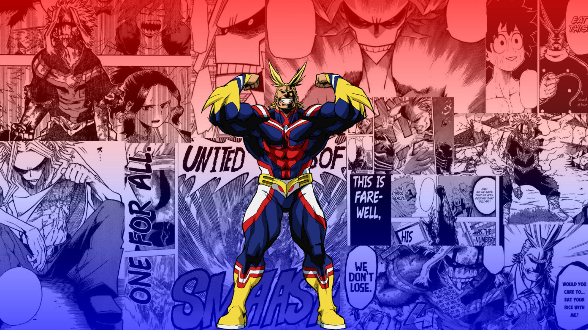

Homem Aranha

O Homem-Aranha é o alter ego de Peter Parker, um super-herói da Marvel criado por Stan Lee e Steve Ditko em 1962. Picado por uma aranha radioativa, o herói ganha agilidade, a capacidade de grudar em superfícies e um "sentido aranha" que pressente perigos. Ele é conhecido por seu traje vermelho e azul, inteligência genial em ciências e por equilibrar o combate ao crime em Nova York.
Saiba Mais
Batman

O Batman, alter ego do bilionário Bruce Wayne, é um super-herói da DC Comics criado em 1939. Sem superpoderes, utiliza intelecto genial, treinamento físico de elite e tecnologia avançada para combater o crime em Gotham City como um vigilante sombrio. Movido pela vingança do assassinato de seus pais, atua como o "Cavaleiro das Trevas".
Saiba Mais
All Might

All Might, nome artístico de Toshinori Yagi, é o ex-herói profissional número um de My Hero Academia e o "Símbolo da Paz". Conhecido por seu físico supermusculoso, sorriso constante e trajes nas cores dos EUA, ele possui a individualidade One For All, conferindo força e velocidade sobre-humanas. Ele é um mentor altruísta que inspira esperança, mesmo após sua aposentadoria.
Saiba Mais